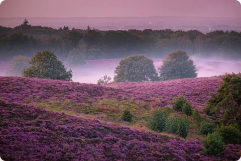
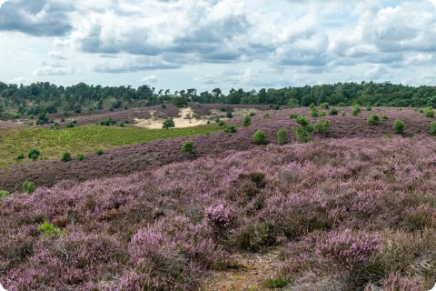
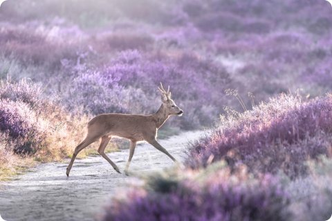
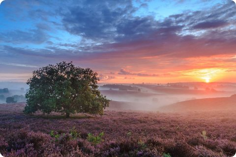

This area has pine forest, open fields and sand, home to wild animals like deer.
Take a train to the nearest town, then bus or grab one of the free bikes inside the park.
Marked trails range from easy half-hour walks near the entrance to full-day hikes across the park.
Wear good shoes, as some trails are sandy or hilly and can be muddy after rain.

In August the fields turn purple. There's a museum in the middle of the park too, so plan a full day if you want to see both.

The Veluwezoom is one of the oldest national parks in the country, with trails for every fitness level.
Free bikes are available at several entrances once you arrive by train or bus.
The visitor center near the entrance has free trail maps and shows which routes are open.
Pack a lunch, as there are only a few cafes inside the park and they get busy at weekends.


Deer and wild boar live in the park, so keep a respectful distance if you spot them.
Autumn brings the best colors, while August is when the heather turns purple.
Early morning and evening are the best times to see animals, when the park is quiet.
Stay on the marked paths to protect the plants and the animals that live there.